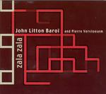

| Artist: | John Litton Baroi and Pierre Vervloesem |
| Title: | Zala Zala |
| Label: | Carbon 7 C7-060 |
| Length(s): | 46 minutes |
| Year(s) of release: | 2001 |
| Month of review: | [04/2004] |
| 1) | Teer Nai Tore | 4.20 |
| 2) | Tor Hashite | 4.50 |
| 3) | Kal Gelo | 6.38 |
| 4) | Pothiker Vhari Bozha | 5.19 |
| 5) | Talee Talee | 4.31 |
| 6) | Tor Kotha | 4.27 |
| 7) | Zala Zala | 5.07 |
| 8) | Prethibee Prethibee | 5.43 |
| 9) | Aei Kotha | 5.33 |